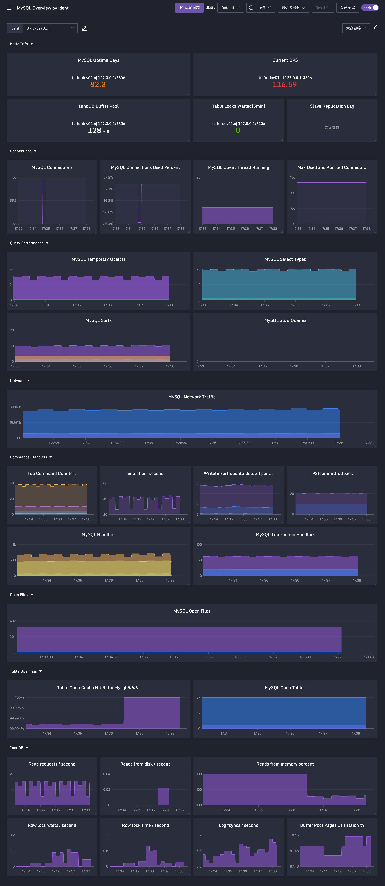

MySQL
延迟
应用程序会向MySQL发起SELECT、UPDATE等操作，处理这些请求花费了多久，是非常关键的，甚至我们还想知道具体是哪个SQL最慢，这样就可以有针对性地调优。我们应该如何采集这些延迟数据呢？典型的方法有三种。
- 在客户端埋点。即上层业务程序在请求MySQL的时候，记录一下每个SQL的请求耗时，把这些数据统一推给监控系统，监控系统就可以计算出平均延迟、95分位、99分位的延迟数据了。不过因为要埋点，对业务代码有一定侵入性。
- Slow queries。MySQL提供了慢查询数量的统计指标，通过下面这段命令就可以拿到。
show global status like 'Slow_queries';
+---------------+-------+
| Variable_name | Value |
+---------------+-------+
| Slow_queries | 107 |
+---------------+-------+
1 row in set (0.000 sec)
这个指标是Counter类型的，即单调递增，如果想知道最近一分钟有多少慢查询，需要使用 increase 函数做二次计算。
怎么算慢查询呢？实际是有一个全局变量的long_query_time，默认是10秒，不过也可以调整。每当查询时间超过了 long_query_time 指定的时间，Slow_queries 就会 +1，我们可以通过下面这段命令获取 long_query_time 的值。
SHOW VARIABLES LIKE 'long_query_time';
+-----------------+-----------+
| Variable_name | Value |
+-----------------+-----------+
| long_query_time | 10.000000 |
+-----------------+-----------+
1 row in set (0.001 sec)
- 通过 performance schema 和 sys schema 拿到统计数据。比如 performance schema 的 events_statements_summary_by_digest 表，这个表捕获了很多关键信息，比如延迟、错误量、查询量。我们看下面的例子，SQL执行了2次，平均执行时间是325毫秒，表里的时间度量指标都是以皮秒为单位。
*************************** 1. row ***************************
SCHEMA_NAME: employees
DIGEST: 0c6318da9de53353a3a1bacea70b4fce
DIGEST_TEXT: SELECT * FROM `employees` WHERE `emp_no` > ?
COUNT_STAR: 2
SUM_TIMER_WAIT: 650358383000
MIN_TIMER_WAIT: 292045159000
AVG_TIMER_WAIT: 325179191000
MAX_TIMER_WAIT: 358313224000
SUM_LOCK_TIME: 520000000
SUM_ERRORS: 0
SUM_WARNINGS: 0
SUM_ROWS_AFFECTED: 0
SUM_ROWS_SENT: 520048
SUM_ROWS_EXAMINED: 520048
...
SUM_NO_INDEX_USED: 0
SUM_NO_GOOD_INDEX_USED: 0
FIRST_SEEN: 2016-03-24 14:25:32
LAST_SEEN: 2016-03-24 14:25:55
针对即时查询、诊断问题的场景，我们还可以使用 sys schema，sys schema提供了一种组织良好、人类易读的指标查询方式，查询起来更简单。比如我们可以用下面的方法找到最慢的SQL。这个数据在 statements_with_runtimes_in_95th_percentile 表中。
SELECT * FROM sys.statements_with_runtimes_in_95th_percentile;
如果你想了解更多的例子，可以查看 sys schema 的文档。不过要注意的是，MySQL 从 5.7.7 版本开始，才包含了 sys schema，好在从 5.6 版本开始可以手工安装。
流量
关于流量，我们最耳熟能详的是统计 SELECT、UPDATE、DELETE、INSERT 等语句执行的数量。如果流量太高，超过了硬件承载能力，显然是需要监控、需要扩容的。这些类型的指标在 MySQL 的全局变量中都可以拿到。我们来看下面这个例子。
show global status where Variable_name regexp 'Com_insert|Com_update|Com_delete|Com_select|Questions|Queries';
+-------------------------+-----------+
| Variable_name | Value |
+-------------------------+-----------+
| Com_delete | 2091033 |
| Com_delete_multi | 0 |
| Com_insert | 8837007 |
| Com_insert_select | 0 |
| Com_select | 226099709 |
| Com_update | 24218879 |
| Com_update_multi | 0 |
| Empty_queries | 25455182 |
| Qcache_queries_in_cache | 0 |
| Queries | 704921835 |
| Questions | 461095549 |
| Slow_queries | 107 |
+-------------------------+-----------+
12 rows in set (0.001 sec)
例子中的这些指标都是 Counter 类型，单调递增，另外 Com_ 是 Command 的前缀，即各类命令的执行次数。 **整体吞吐量主要是看 Questions 指标**，但Questions 很容易和它上面的Queries混淆。从例子里我们可以明显看出 Questions 的数量比 Queries 少。Questions 表示客户端发给 MySQL 的语句数量，而Queries还会包含在存储过程中执行的语句，以及 PREPARE 这种准备语句，所以监控整体吞吐一般是看 Questions。
流量方面的指标，一般我们会统计写数量（Com_insert + Com_update + Com_delete）、读数量（Com_select）、语句总量（Questions）。
错误
错误量这类指标有多个应用场景，比如客户端连接 MySQL 失败了，或者语句发给 MySQL，执行的时候失败了，都需要有失败计数。典型的采集手段有两种。
- 在客户端采集、埋点，不管是 MySQL 的问题还是网络的问题，亦或者中间负载均衡的问题或DNS解析的问题，只要连接失败了，都可以发现。缺点刚刚我们也介绍了，就是会有代码侵入性。
- 从 MySQL 中采集相关错误，比如连接错误可以通过 Aborted_connects 和 Connection_errors_max_connections 拿到。
show global status where Variable_name regexp 'Connection_errors_max_connections|Aborted_connects';
+-----------------------------------+--------+
| Variable_name | Value |
+-----------------------------------+--------+
| Aborted_connects | 785546 |
| Connection_errors_max_connections | 0 |
+-----------------------------------+--------+
只要连接失败，不管是什么原因，Aborted_connects 都会 +1，而更常用的是 Connection_errors_max_connections ，它表示超过了最大连接数，所以 MySQL 拒绝连接。MySQL 默认的最大连接数只有 151，在现在这样的硬件条件下，实在是太小了，因此出现这种情况的频率比较高，需要我们多多关注，及时发现这一情况。
SHOW VARIABLES LIKE 'max_connections';
+-----------------+-------+
| Variable_name | Value |
+-----------------+-------+
| max_connections | 151 |
+-----------------+-------+
1 row in set (0.001 sec)
我们可以通过这个命令来调整最大连接数。
SET GLOBAL max_connections = 2048;
虽然我们可以通过命令临时调整最大连接数，但一旦重启的话就失效了。为了永久修改这个配置，我们需要调整 my.cnf，在里面增加这么一行内容。
max_connections = 2048
刚刚我们在介绍延迟指标的时候，提到了 events_statements_summary_by_digest 表，我们也可以通过这个表拿到错误数量。
举个例子。
SELECT schema_name
, SUM(sum_errors) err_count
FROM performance_schema.events_statements_summary_by_digest
WHERE schema_name IS NOT NULL
GROUP BY schema_name;
+--------------------+-----------+
| schema_name | err_count |
+--------------------+-----------+
| employees | 8 |
| performance_schema | 1 |
| sys | 3 |
+--------------------+-----------+
饱和度
对于 MySQL 而言，用什么指标来反映资源有多“满”呢？首先我们要关注 MySQL 所在机器的 CPU、内存、硬盘I/O、网络流量这些基础指标。
MySQL 本身也有一些指标来反映饱和度，比如刚才我们讲到的连接数，当前连接数（Threads_connected）除以最大连接数（max_connections）可以得到 **连接数使用率**，是一个需要重点监控的饱和度指标。
另外就是 InnoDB Buffer pool 相关的指标，一个是 Buffer pool 的使用率，一个是 Buffer pool 的内存命中率。Buffer pool 是一块内存，专门用来缓存 Table、Index 相关的数据，提升查询性能。对 InnoDB 存储引擎而言，Buffer pool 是一个非常关键的设计。我们查看一下 Buffer pool 相关的指标。
MariaDB [(none)]> show global status like '%buffer%';
+---------------------------------------+--------------------------------------------------+
| Variable_name | Value |
+---------------------------------------+--------------------------------------------------+
| Innodb_buffer_pool_dump_status | |
| Innodb_buffer_pool_load_status | Buffer pool(s) load completed at 220825 11:11:13 |
| Innodb_buffer_pool_resize_status | |
| Innodb_buffer_pool_load_incomplete | OFF |
| Innodb_buffer_pool_pages_data | 5837 |
| Innodb_buffer_pool_bytes_data | 95633408 |
| Innodb_buffer_pool_pages_dirty | 32 |
| Innodb_buffer_pool_bytes_dirty | 524288 |
| Innodb_buffer_pool_pages_flushed | 134640371 |
| Innodb_buffer_pool_pages_free | 1036 |
| Innodb_buffer_pool_pages_misc | 1318 |
| Innodb_buffer_pool_pages_total | 8191 |
| Innodb_buffer_pool_read_ahead_rnd | 0 |
| Innodb_buffer_pool_read_ahead | 93316 |
| Innodb_buffer_pool_read_ahead_evicted | 203 |
| Innodb_buffer_pool_read_requests | 8667876784 |
| Innodb_buffer_pool_reads | 236654 |
| Innodb_buffer_pool_wait_free | 5 |
| Innodb_buffer_pool_write_requests | 533520851 |
+---------------------------------------+--------------------------------------------------+
19 rows in set (0.001 sec)
这里有 4 个指标我重点讲一下。 Innodb_buffer_pool_pages_total 表示 InnoDB Buffer pool 的页总量，页（page）是 Buffer pool 的一个分配单位，默认的 page size 是 16KiB，可以通过 show variables like "innodb_page_size" 拿到。
Innodb_buffer_pool_pages_free 是剩余页数量，通过 total 和 free 可以计算出 used，用 used 除以 total 就可以得到使用率。当然，使用率高并不是说有问题，因为InnoDB有 LRU 缓存清理机制，只要响应得够快，高使用率也不是问题。
Innodb_buffer_pool_read_requests 和 Innodb_buffer_pool_reads 是另外两个关键指标。read_requests 表示向 Buffer pool 发起的查询总量，如果 Buffer pool 缓存了相关数据直接返回就好，如果 Buffer pool 没有相关数据，就要穿透内存去查询硬盘了。有多少请求满足不了需要去查询硬盘呢？
这就要看 Innodb_buffer_pool_reads 指标统计的数量。所以，reads 这个指标除以 read_requests 就得到了穿透比例，这个比例越高，性能越差，一般可以通过调整 Buffer pool 的大小来解决。
根据 Google 四个黄金指标的方法论，我们梳理了 MySQL 相关的指标，这些指标大多是可以通过 global status 和 variables 拿到的。performance schema 和 sys schema 相对难搞，一是 sys schema 需要较高版本才能支持，二是这两个 schema 的数据不太适合放到 metrics 库里。常见做法是通过一些偏全局的统计指标，比如Slow_queries，先发现问题，再通过这两个 schema 的数据分析细节。
不同的采集器采集的指标，命名方式会有差别，不过大同小异，关键是理解思路和原理。下面我们还是利用 Categraf 来配置采集，演示一下整个过程。
采集配置
Categraf 针对 MySQL 的采集插件配置，在 conf/input.mysql/mysql.toml 里。我准备了一个配置样例，你可以参考。
[[instances]]
address = "127.0.0.1:3306"
username = "root"
password = "1234"
extra_status_metrics = true
extra_innodb_metrics = true
gather_processlist_processes_by_state = false
gather_processlist_processes_by_user = false
gather_schema_size = false
gather_table_size = false
gather_system_table_size = false
gather_slave_status = true
# # timeout
# timeout_seconds = 3
# labels = { instance="n9e-dev-mysql" }
最关键的配置是 **数据库连接地址和认证信息**，具体采集哪些内容由一堆开关来控制。一般我建议把 extra_status_metrics、extra_innodb_metrics、gather_slave_status 设置为 true，其他的都不太需要采集。labels部分，我建议你加个 instance 标签，给这个数据库取一个表意性更强的名称，未来收到告警消息的时候，可以一眼知道是哪个数据库的问题。instances 部分是个数组，如果要监控多个数据库，就配置多个 instances 就可以了。
Categraf 作为采集探针，采集 MySQL 时，有两种方案，一个是中心化探测方案，一个是分布式本地采集的方案。
中心化探测
这个方案是专门找一台机器作为探针机器，部署一个单独的 Categraf，只用来采集 MySQL 相关的指标，同时采集所有的 MySQL 实例，即这个 Categraf 的 mysql.toml 中会有很多 instances 配置段。
这种方案对 MySQL 实例数量较少以及云上的 RDS 服务的场景，都是适用的。不过相对不太方便做自动化，比如要新建一个 MySQL，还需要到这个探针机器里配置相关的采集规则，有一些麻烦。
分布式本地采集
我个人更推荐第二种方案——分布式本地采集。这个方案是把 Categraf 部署到部署 MySQL 的那台机器上，让 Categraf 采集 127.0.0.1:3306 的实例。对于 MySQL 这个服务，我建议不要混部，一台宿主机就部署一个 MySQL 就可以了，InnoDB Buffer pool 设置得大一些，80%物理内存，性能杠杠的。
DBA 管理 MySQL的时候要经常创建集群，通常会沉淀出一些自动化工具，在自动化工具里把部署 Categraf、配置 Categraf 的 mysql.toml 的逻辑都加上，一键搞定，比较方便。监控只需要读权限，建议你 为监控系统创建一个单独的数据库账号，统一账号、统一密码、统一授权，这样 mysql.toml 的配置也比较一致。
采用这种部署方式的话，一般就用机器名做标识就可以了，不太需要单独的instance标签。Categraf 内置了一个 夜莺监控大盘，大盘变量使用机器名来做过滤。如果你用的是 Grafana，可以去 Grafana 官网搜一下 Dashboard，大同小异。注意一下，刚刚我们提到的那些关键指标，最好都要放到 Dashboard 里。效果图大概是这个样子。

业务指标
MySQL 的指标采集，核心原理其实就是连上MySQL执行一些 SQL，查询性能数据。Categraf 内置了一些查询 SQL，那我们能否自定义一些 SQL，查询一些业务指标呢？比如查询一下业务系统的用户量，把用户量作为指标上报到监控系统，还是非常有价值的。 第 9 讲 我介绍过监控分类，其中最重要的一个类别，就是业务监控。
这个需求我们仍然可以使用 Categraf 的 MySQL 采集插件实现，查看 mysql.toml 里的默认配置，可以看到这样一段内容。
[[instances.queries]]
mesurement = "users"
metric_fields = [ "total" ]
label_fields = [ "service" ]
field_to_append = ""
timeout = "3s"
request = '''
select 'n9e' as service, count(*) as total from n9e_v5.users
'''
这就是自定义SQL的配置，想要查询哪个数据库实例，就在对应的 [[instances]] 下面增加 [[instances.queries]] 。我们看下这几个配置参数的解释。
- mesurement 指标类别，会作为 metric name 的前缀。
- metric_fields 查询返回的结果，可能有多列是数值，指定哪些列作为指标上报。
- label_fields 查询返回的结果，可能有多列是字符串，指定哪些列作为标签上报。
- field_to_append 指定某一列的内容作为 metric name 的后缀。
- timeout 语句执行超时时间。
- request 查询语句，连续三个单引号，和Python的三个单引号语义类似，里边的内容就不用转义了。